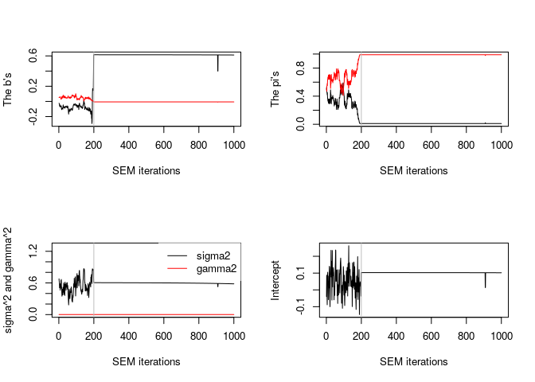

Implements an empirical Bayes approach for simultaneous variable clustering and regression. This version also (re)implements in C++ an R script proposed by Howard Bondell that fits the Pairwise Absolute Clustering and Sparsity (PACS) methodology (see Sharma et al (2013) doi: 10.1080/15533174.2012.707849).
Installation
You can install the released version of clere from CRAN with:
install.packages("clere")And the development version from GitHub with:
# install.packages("remotes")
remotes::install_github("mcanouil/clere")Citing clere
Yengo L, Jacques J, Biernacki C, Canouil M (2016). “Variable Clustering in High-Dimensional Linear Regression: The R Package clere.” The R Journal, 8(1), 92–106. doi: 10.32614/RJ-2016-006.
@Article{,
title = {{Variable Clustering in High-Dimensional Linear Regression: The R Package clere}},
author = {Loïc Yengo and Julien Jacques and Christophe Biernacki and Mickael Canouil},
journal = {The R Journal},
year = {2016},
month = {apr},
doi = {10.32614/RJ-2016-006},
pages = {92--106},
volume = {8},
number = {1},
}Example
library(clere)
x <- matrix(rnorm(50 * 100), nrow = 50, ncol = 100)
y <- rnorm(50)
model <- fitClere(y = y, x = x, g = 2, plotit = FALSE)
model
#> ~~~ Class: Clere ~~~
#> ~ y : [50] -0.3663 1.0417 0.8401 0.6298 1.3977 -0.4709
#> ~ x : [50x100]
#> 1 2 3 4 5 .
#> 1 0.54299 0.54408 1.73588 -0.05461 -0.94133 ........
#> 2 1.11327 -1.00079 -0.71194 -2.17234 0.38946 ........
#> 3 -0.97223 0.03499 -1.20295 -1.32578 -1.12280 ........
#> 4 0.71881 -0.92304 0.22933 1.22511 0.35874 ........
#> 5 -0.53657 0.01233 -0.72067 -0.10695 -1.71511 ........
#> . ........ ........ ........ ........ ........ ........
#>
#> ~ n : 50
#> ~ p : 100
#> ~ g : 2
#> ~ nItMC : 50
#> ~ nItEM : 1000
#> ~ nBurn : 200
#> ~ dp : 5
#> ~ nsamp : 200
#> ~ sparse : FALSE
#> ~ analysis : "fit"
#> ~ algorithm : "SEM"
#> ~ initialized : FALSE
#> ~ maxit : 500
#> ~ tol : 0.001
#> ~ seed : 945
#> ~ b : [2] 0.613709 -0.006548
#> ~ pi : [2] 0.01002 0.98998
#> ~ sigma2 : 0.5981
#> ~ gamma2 : 0.0001097
#> ~ intercept : 0.1022
#> ~ likelihood : -64.18
#> ~ entropy : 0
#> ~ P : [100x2]
#> Group 1 Group 2
#> 1 0 1
#> 2 0 1
#> 3 0 1
#> 4 0 1
#> 5 0 1
#> . ....... .......
#>
#> ~ theta : [1000x8]
#> intercept b1 b2 pi1 pi2 .
#> 1 -0.03965 -0.02462 0.05342 0.50000 0.50000 .........
#> 2 0.08769 -0.02585 0.05114 0.53000 0.47000 .........
#> 3 0.03731 -0.03260 0.05189 0.46000 0.54000 .........
#> 4 -0.03508 -0.05160 0.05514 0.45000 0.55000 .........
#> 5 -0.08861 -0.06464 0.05811 0.42000 0.58000 .........
#> . ......... ......... ......... ......... ......... .........
#>
#> ~ Zw : [100x200]
#> 1 2 3 4 5 .
#> 1 1 1 1 1 1 .
#> 2 1 1 1 1 1 .
#> 3 1 1 1 1 1 .
#> 4 1 1 1 1 1 .
#> 5 1 1 1 1 1 .
#> . . . . . . .
#>
#> ~ Bw : [100x200]
#> 1 2 3 4 5 .
#> 1 -7.080e-03 -5.029e-03 -1.654e-02 -9.838e-03 -1.157e-02 ..........
#> 2 1.664e-03 -3.672e-05 -1.369e-02 5.982e-03 -1.140e-02 ..........
#> 3 -6.606e-03 -1.330e-02 3.800e-03 -1.147e-02 -1.297e-02 ..........
#> 4 -8.453e-03 8.423e-03 -1.493e-03 5.931e-03 1.637e-02 ..........
#> 5 -2.101e-02 -5.158e-03 -7.439e-03 -8.822e-03 -1.320e-02 ..........
#> . .......... .......... .......... .......... .......... ..........
#>
#> ~ Z0 : NA
#> ~ message : NA
plot(model)
clus <- clusters(model, threshold = NULL)
clus
#> [1] 2 2 2 2 2 2 2 2 2 2 2 2 2 2 2 2 2 2 2 2 2 2 2 2 2 2 2 2 2 2 2 2 2 2 2 2 2
#> [38] 2 2 2 2 2 2 2 2 2 2 2 2 2 2 2 2 2 2 2 2 2 2 2 2 2 2 2 2 2 2 2 2 2 2 2 2 2
#> [75] 2 2 2 2 2 2 2 2 2 2 2 2 2 2 2 1 2 2 2 2 2 2 2 2 2 2
predict(model, newx = x + 1)
#> [1] -0.41014043 0.58417440 0.07565606 0.12651690 0.10691068 -0.51438081
#> [7] -0.53730664 -0.38719372 0.96052339 1.04059573 -0.47278984 -0.54533104
#> [13] -0.14680892 0.04529841 -0.44803772 0.48753442 -1.03283097 -0.96206984
#> [19] 0.90252948 0.35887126 -0.59158591 0.27172199 0.73862087 -0.13525905
#> [25] 1.14287637 0.37955118 -0.21296002 -0.66091713 0.22797485 0.04944170
#> [31] 0.52612573 -0.15168824 -0.78401104 -0.53532663 -0.44697030 0.19048671
#> [37] 0.10341728 -0.37691391 -0.69165509 0.52461656 0.60826835 0.01190567
#> [43] -0.50238925 0.22288924 -0.28840397 -0.43573542 -0.26704384 0.49779102
#> [49] 0.08028461 0.41752563
summary(model)
#> -------------------------------
#> | CLERE | Yengo et al. (2016) |
#> -------------------------------
#>
#> Model object for 2 groups of variables ( user-specified )
#>
#> ---
#> Estimated parameters using SEM algorithm are
#> intercept = 0.1022
#> b = 0.613709 -0.006548
#> pi = 0.01002 0.98998
#> sigma2 = 0.5981
#> gamma2 = 0.0001097
#>
#> ---
#> Log-likelihood = -64.18
#> Entropy = 0
#> AIC = 140.36
#> BIC = 151.84
#> ICL = 151.84Getting help
If you encounter a clear bug, please file a minimal reproducible example on github.
For questions and other discussion, please contact the package maintainer.
Please note that this project is released with a Contributor Code of Conduct.
By participating in this project you agree to abide by its terms.